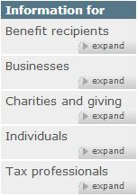

Foundations
Read time: 2 minutes
On this page
Grouping and structure
You need to create a structure that will help users quickly make sense of information.
The right structure will guide users to information through recognition and context.
Consider how you might organize a pile of various hats.
The same hats may be grouped by category (feathers, ribbons, protectiveness, religious, military, style…); according to their location of manufacture (Holland, Africa, Japan...); alphabetically (bowler, cap, fedora…); or by continuum, such as size or cost.
When a hat is alone, it may tell us little about itself or the wearer, but in comparison with other hats it may indicate authority, membership, occupation, or interest.
The creative organization of information creates new information.
The hats never change, but hanging them in different patterns or with different rules or on different hat racks can affect what we learn about them.
Before you determine how to organize your content, you need to understand the:
- Subject or domain of your content (the broad context of the topic)
- Users' mental models in relation to this content (how they already think about it)
- Business needs and objectives that may affect your information architecture (IA) goals
As you group content, remember that categories aren't neutral. Each category exposes certain biases and prioritizes a particular point of view at the expense of others.
For example, before moving to Canada.ca, the Canada Revenue Agency (CRA) had its own site. Content was organized alphabetically, by audience.
When the new TBS template was released the grouping and ordering was reconsidered.
| Prior to April 2013 | After May 2013 |
|---|---|
|
|
| Screenshot:  |
Screenshot: |
Several changes were made:
- Organizing by most popular instead of alphabetically
The first menu option gets the most attention, so 'Benefit recipients' was unintentionally being prioritized over the much more popular content under 'Individuals' and 'Businesses'. - Renaming "Individuals" to "Individuals and families" and moving “Benefit recipients” content into the "Individuals and families" page
Restructured to match users’ mental model. - Renaming "Tax professionals" to "Representatives"
Personal representatives weren’t finding the information they needed because they didn’t necessarily consider themselves tax professionals.
The re-organization and re-labelling of these categories allowed visitors to correctly identify themselves within the categories.
Remember: There is no neutral IA. Although the categories may be parallel, the placement, ordering, and prioritization of the categories affect the user's experience. Additionally, since categories need to be labelled, problems can emerge if the labels are not effective.
Top-down and bottom-up
Top-down information architecture (IA) is the site's big-picture, supporting the user's navigation through the major content sections. Many users skip over this IA by using the search engine instead.
Bottom-up IA is content IA. It's the headings, information groupings, content placement that supports the user when searching and browsing.
Ideally, both top-down and bottom-up IA should be explored and addressed.
Life cycle
Keep in mind that any organization or structure is only as good as the commitment to maintain it.
The digital environment tends to change easily and often. This means that information architecture (IA) is also fluid and iterative. As user or business needs change, IA may have to change as well.
All course sections
- Date modified: